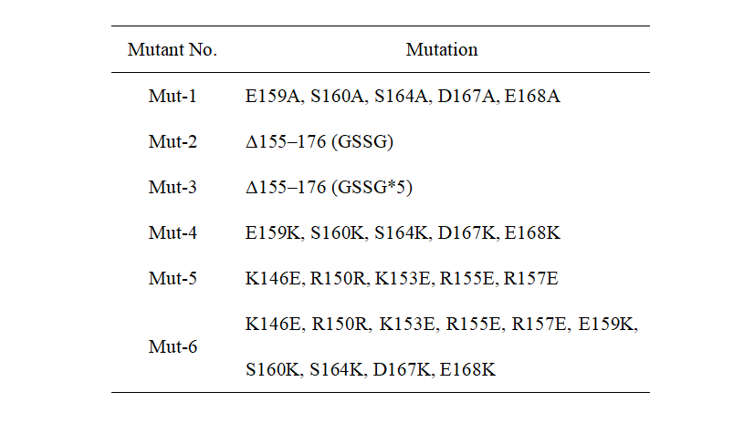
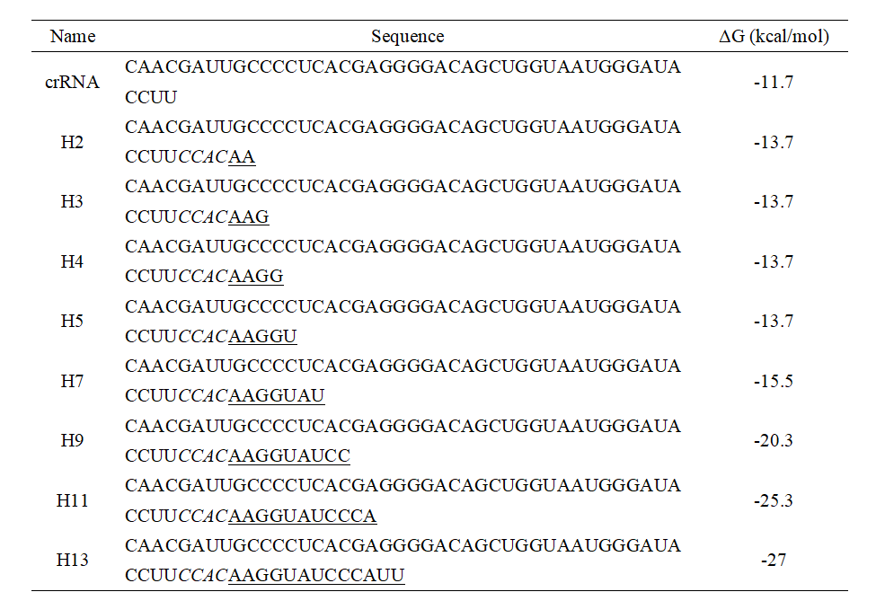

Design
OVERVIEW
Recognizing mismatch targets by Cas nuclease is crucial for both in vivo genome editing and in vitro nucleic acid detection. The capability of Cas to recognize mismatched targets is improved when compared to Cas12a. Recent research has demonstrated that adding a hairpin secondary structure to the spacer region of crRNA can decrease Cas nuclease's affinity for the crRNA/mismatched target complex, increasing the specificity of the CRISPR-Cas system's target identification [2]. Here, our team will further explore the mutations in helix α7 of CasΦ nuclease and combine them with hairpin-structured crRNA to create a CRISPR-Cas system for nucleic acid detection that is more sensitive and specific.
CasΦ NUCLEASE
CRISPR-CasΦ, a small RNA-guided enzyme found uniquely in bacteriophages, achieves programmable DNA cutting as well as genome editing[1]. The protein size of CasΦ is 70 to 80 kDa, about half the size of Cas9 and Cas12a, but maintains the ability to unwind and cut dsDNA. Cryo-EM-based structural studies indicate that CasΦ forms a compact structure, in which protein and crRNA are interwoven to realize RNA-guided dsDNA unwinding and cleavage. CasΦ also exhibits target-activated trans-cleavage ssDNA activity, which is an activity associated Cas12 nucleases family.
SITE-DIRECTED MUTAGENESIS
The results from Jennifer Doudna’s group showed that the helix α7 in CasΦ protein has a significant effect on enzyme activity. Based on the above, we modified the protein by point mutation. The detailed mutation content is shown in Table 1. Mut-1 and Mut-2 are designed by Doudna’s group and used as positive controls. From Mut-3 to Mut-6 are the mutants designed by our team. All wild-type and mutants are directly genes synthesized by GenScript Biotech Corporation (Nanjing, China).
Table 1. Mutation sites of different mutants

MOLECULAR DYNAMIC SIMULATION
We used the optimized system to carry out molecular dynamics simulation for the above mutants, and the simulation time was 400 ns. It is calculated based on a simulated track using the program provided by GROMAC 5.2.11 software. The GROMOS96 force field is selected, and the SPC model is adopted for water molecules. The Lenard Jones function is used to calculate the van der Waals force. The particle-mesh Ewald method is used to calculate the electrostatic interaction. The Verlet leapfrog algorithm is used to solve the equation of motion at each step, and the coordinates of each atom at the new time are obtained through integration. The LINCS algorithm is used to fix the relative distance between all bonding atoms to reduce the computational complexity. According to the GMX RMS module in the Gromacs package, we calculate the RMSD of different components in the simulation system
crRNA SECONDARY STRUCTURE
As reported by Gersbach et al. a hairpin secondary structure in the spacer region of crRNA can increase the CRISPR-Cas system specificity for target cleavage[2]. To verify whether this strategy is effective for the trans-cleavage activity of CasΦ, we introduced different lengths of hairpin structures into the crRNA of CasΦ (Table 3).
Table 3. The sequence of crRNAs with hairpin structures

[1]Deltcheva, E., K. Chylinski, C.M. Sharma, et al., CRISPR RNA maturation by trans-encoded small RNA and host factor RNase III. Nature, 2011. 471(7340): p. 602-7.doi: 10.1038/nature09886.
[2]Kocak, D.D., E.A. Josephs, V. Bhandarkar, et al., Increasing the specificity of CRISPR systems with engineered RNA secondary structures. Nat Biotechnol, 2019. 37(6): p. 657-666.doi: 10.1038/s41587-019-0095-1.
[2]Kocak, D.D., E.A. Josephs, V. Bhandarkar, et al., Increasing the specificity of CRISPR systems with engineered RNA secondary structures. Nat Biotechnol, 2019. 37(6): p. 657-666.doi: 10.1038/s41587-019-0095-1.